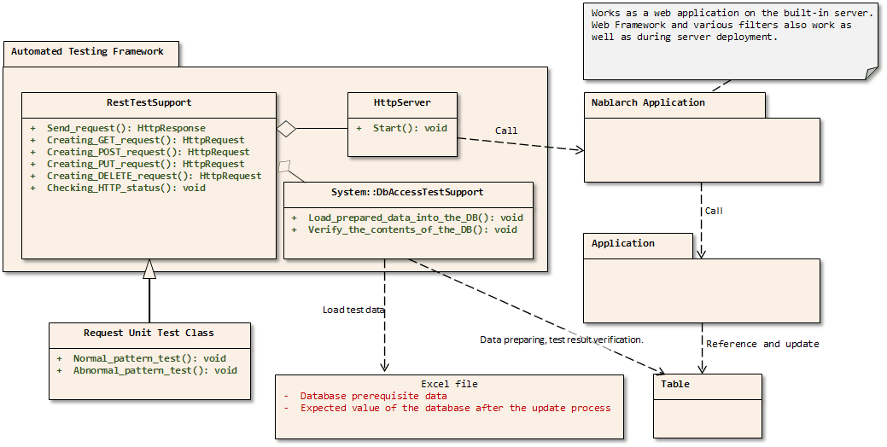

3.2.4. Request Unit Test (RESTful Web Service)¶
3.2.4.1. Summary¶
Request Unit Test (REST) uses the built-in server for testing in the same way as Request Unit Test (web application) . Only RESTful web services runtime platform requires more modules than the other platforms, so the modules listed in Module List need to be added to the dependencies.
3.2.4.1.1. Overall picture¶
3.2.4.1.2. Main Classes, resources¶
| Name | Role | Creation unit |
|---|---|---|
| Test class | Implement the test logic. | Create one per class (Action) to be tested. |
| Test data (Excel file) | Describe test data such as preparation data, expected results, HTTP parameters, etc. to be stored in a table. | Create one per test class |
| Class to be tested (Action) | Class to be tested (includes each class that implements business logic after Action) | Create one class per subfunction |
| DbAccessTestSupport | Provides the necessary functions for testing using the database, such as preparation data input. | - |
| HttpServer | Built-in server. Operates as a servlet container having the function to output HTTP response to a file. | - |
| RestTestSupport | Provides various asserts that are required for starting the built-in server and for the request unit test. | - |
3.2.4.1.3. Module list¶
<!-- Testing Framework Mainframe -->
<dependency>
<groupId>com.nablarch.framework</groupId>
<artifactId>nablarch-testing-rest</artifactId>
<scope>test</scope>
</dependency>
<!-- Default settings used by the testing framework -->
<dependency>
<groupId>com.nablarch.configuration</groupId>
<artifactId>nablarch-testing-default-configuration</artifactId>
<scope>test</scope>
</dependency>
<!-- Implementation of an built-in server used by the testing framework -->
<dependency>
<groupId>com.nablarch.framework</groupId>
<artifactId>nablarch-testing-jetty6</artifactId>
<scope>test</scope>
</dependency>
Important
nablarch-testing-rest depends on nablarch-testing (Testing framework) .
Adding the above module to the dependencies allows you to use Testing framework‘s API as well.
Tip
If you are using Java11 replace the built-in server as described in Change of Jetty module used in automatic test (only for web projects or RESTful web service projects) .
3.2.4.1.4. Configuration¶
If you created a blank project from an archetype, the testing framework has been configured in src/test/resources/unit-test.xml .
Load the following configuration file provided by default to add the configuration of the testing framework for RESTful web service.
<import file="nablarch/test/rest-request-test.xml"/>
See Various configuration values for request unit test settings.
Tip
The above is already configured if you create a blank project for RESTful web service from the Nablarch5u18 and later archetypes. For web and batch projects, the above must be added.
3.2.4.2. Structure¶
3.2.4.2.1. SimpleRestTestSupport¶
Superclass prepared for the request unit test. Provides methods for the request unit test.
If you don’t need database related features, use this class instead of RestTestSupport as described below.
It has the same features as RestTestSupport below for Pre-preparation assistance features, Execution, and Results Check.
Tip
In case of using RestTestSupport, you need to prepare a dbInfo or testDataParser component.
If you do not need a database dependency, you can use SimpleRestTestSupport to simplify component definition.
3.2.4.2.2. RestTestSupport¶
Superclass prepared for the request unit test. It provides methods for request unit testing.
It inherits from SimpleRestTestSupport and has database related features.
3.2.4.2.4. Pre-preparation assistance features¶
Sending a request to the built-in server requires an instance of HttpRequest.
RestTestSupport class provides four methods to make it easy to create a RestMockHttpRequest object that extends HttpRequest for request unit testing.
RestMockHttpRequest get(String uri)
RestMockHttpRequest post(String uri)
RestMockHttpRequest put(String uri)
RestMockHttpRequest delete(String uri)
In the argument, the following values are passed on.
- Request URI for testing
These methods create a RestMockHttpRequest instance based on the received request URI and return it with the HTTP method set according to the method name. If you want to set data other than the URI, such as request parameters, set the data for the instance obtained by this method call.
Tip
RestMockHttpRequest is implemented to override a method and return an instance of itself to allow you to set parameters and more in a fluent interface.
See Javadoc for more information on the available methods.
An example of building a request
RestMockHttpRequest request = post("/projects")
.setHeader("Authorization","Bearer token")
.setCookie(cookie);
3.2.4.2.5. Execution¶
By calling the following method in RestTestSupport, the built-in server will be started and the request will be sent.
HttpResponse sendRequest(HttpRequest request)
3.2.4.2.6. Result validation¶
3.2.4.2.6.1. Status code¶
validate that the response HTTP status code is as expected by calling the following method in RestTestSupport.
void assertStatusCode(String message, HttpResponse.Status expected, HttpResponse response);
In the argument, the following values are passed on.
- Assert failure message
- Expected Status (Enum of
HttpResponse.Status) HttpResponseinstance returned from the built-in server
Assert failureif the response status code does not match the expected status code.
3.2.4.2.6.2. Response body¶
The framework does not provide a mechanism for response body validation. Use libraries such as JSONAssert(external site), json-path-assert(external site), or XMLUnit(external site) according to the requirements of each project.
Tip
If you have created a RESTful web service blank project, the above JSONAssert (external site), json-path-assert(external site) and XMLUnit(external site) are listed in pom.xml. Delete or replace libraries as necessary.
Supplementary features of response body validation
In some case of validating a response body, you may want to prepare the expected body as a JSON or XML file.
To assist testing when an external library accepts only a String as an expectation value argument, such as JSONAssert,
RestTestSupport has a method to read the file and convert it to a String.
String readTextResource(String fileName)
This method reads a file from a resource in a directory with the same name as the test class with the file name specified in the argument,
and converts it to a String as follows.
| File type | Directory | File name |
|---|---|---|
| Test Class Source File | <PROJECT_ROOT>/test/java/com/example/ | SampleTest.java |
| Response body’s expected value file | <PROJECT_ROOT>/test/resources/com/example/SampleTest | response.json(specified in the argument fileName) |
3.2.4.3. Various configuration values¶
For preference-dependent configuration values, you can change them in the component configuration file.The configurable items are listed below.
3.2.4.3.1. Component configuration file list of configuration items¶
| items | Description | Default value |
|---|---|---|
| webBaseDir | root directory of your web application[1] | src/main/webapp |
| webFrontControllerKey | Web front controller repository keys[2] | webFrontController |
| [1] | If there is a common web module in the project, specify a comma-separated directory for this property. If more than one module is specified, the resources are loaded in order from the head. Examples are shown below. <component name="restTestConfiguration" class="nablarch.test.core.http.RestTestConfiguration">
<property name="webBaseDir" value="/path/to/web-a/,/path/to/web-common"/>
In this case, the resources are searched for web-a, then web-common, in that order. |
| [2] | May want to register a web front controller as a component with a name other than the default “webFrontController”, such as when the web application runtime platform and the web service runtime platform are executed in a single war. In such cases, Can control the handlers executed by the built-in server by configuring this property with the repository key of the web front controller used by the web service. Examples are shown below. A component definition in which the web front controller ( <!-- Handler queue configuration -->
<component name="webFrontController" class="nablarch.fw.web.servlet.WebFrontController">
<property name="handlerQueue">
<list>
<component class="nablarch.fw.web.handler.HttpCharacterEncodingHandler"/>
<component class="nablarch.fw.handler.GlobalErrorHandler"/>
<component class="nablarch.common.handler.threadcontext.ThreadContextClearHandler"/>
<component class="nablarch.fw.web.handler.HttpResponseHandler"/>
.
.
.
(Omitted)
</list>
</property>
</component>
<component name="jaxrsController" class="nablarch.fw.web.servlet.WebFrontController">
<property name="handlerQueue">
<list>
<component class="nablarch.fw.web.handler.HttpCharacterEncodingHandler"/>
<component class="nablarch.fw.handler.GlobalErrorHandler"/>
<component class="nablarch.fw.jaxrs.JaxRsResponseHandler"/>
.
.
.
(Omitted)
</list>
</property>
</component>
Using the testing framework for RESTful web services runtime platform with default settings will use the “webFrontController” and thus run a web front controller for the web application. Can use the web front controller for web services by overriding the settings as follows. <import file="nablarch/test/rest-request-test.xml"/>
<!-- Override the default component definition after import. -->
<component name="restTestConfiguration" class="nablarch.test.core.http.RestTestConfiguration">
<property name="webFrontControllerKey" value="jaxrsController"/>
|